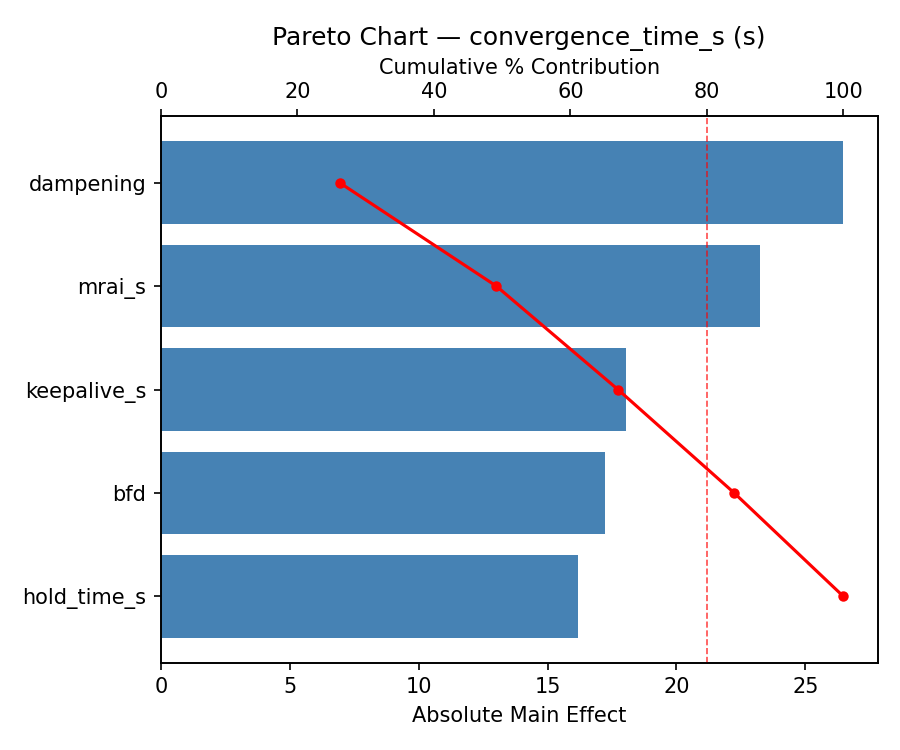
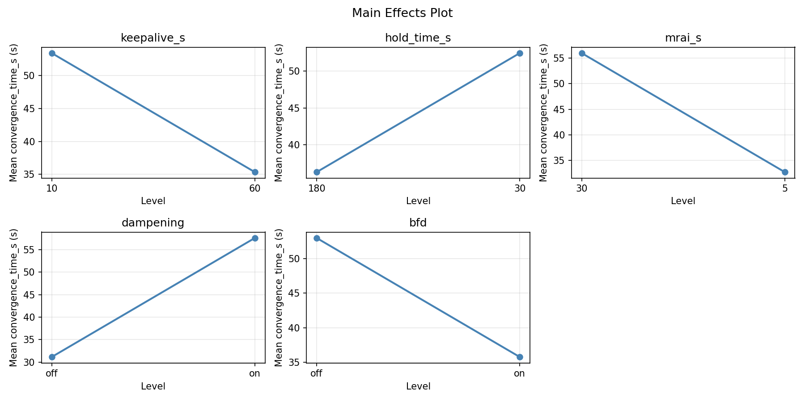
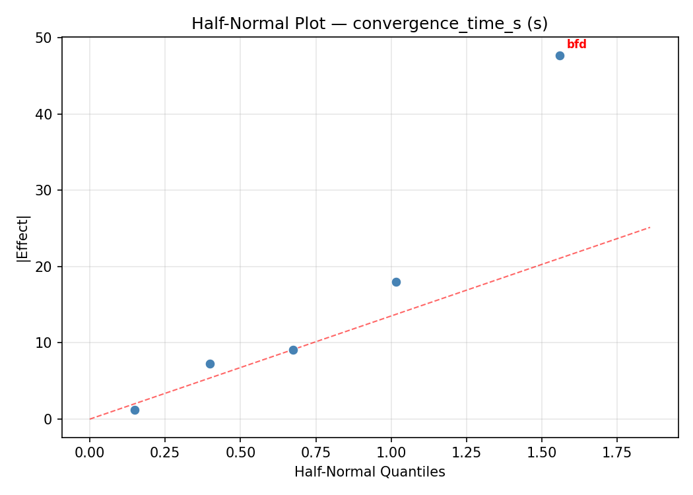
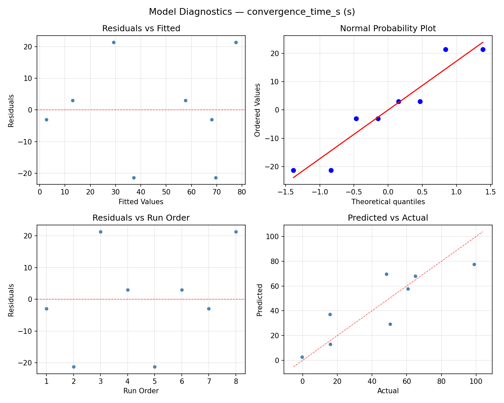
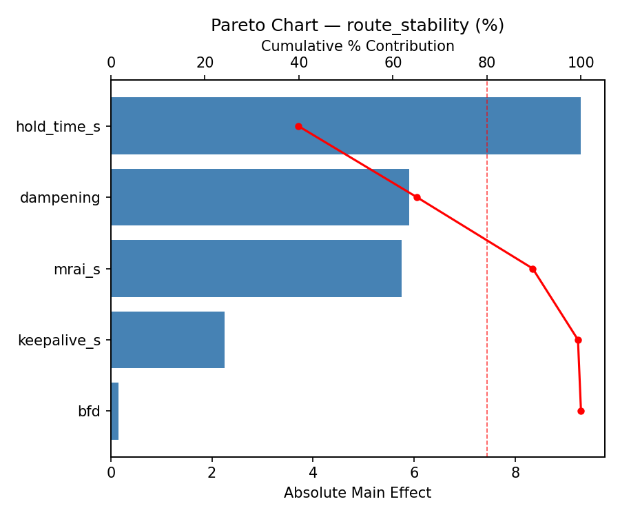
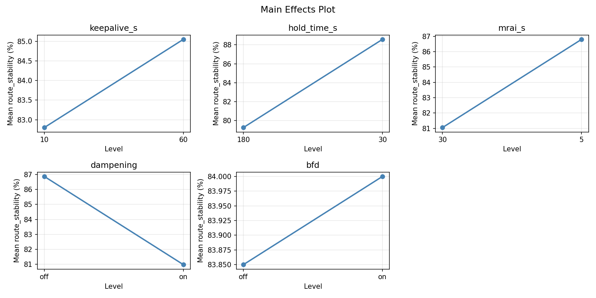
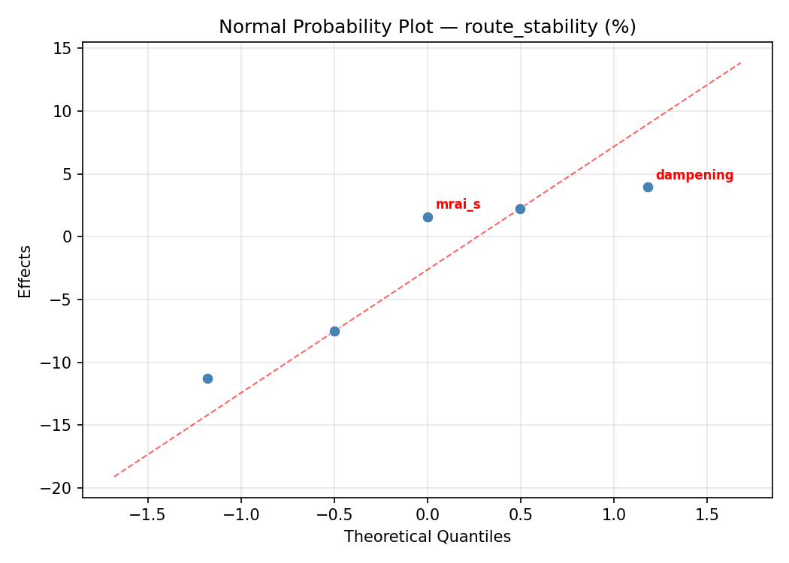
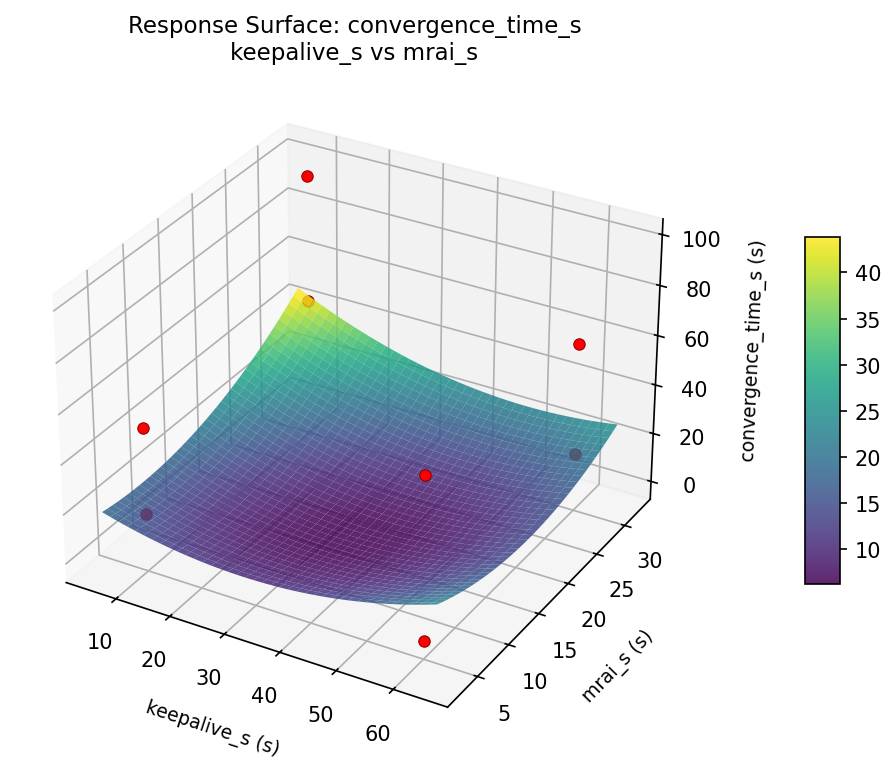

Summary
This experiment investigates bgp route convergence. Fractional factorial of 5 BGP timer and dampening parameters for convergence speed.
The design varies 5 factors: keepalive s (s), ranging from 10 to 60, hold time s (s), ranging from 30 to 180, mrai s (s), ranging from 5 to 30, dampening, ranging from off to on, and bfd, ranging from off to on. The goal is to optimize 2 responses: convergence time s (s) (minimize) and route stability (%) (maximize). Fixed conditions held constant across all runs include as count = 50, topology = partial_mesh.
A fractional factorial design reduces the number of runs from 32 to 8 by deliberately confounding higher-order interactions. This is ideal for screening — identifying which of the 5 factors matter most before investing in a full study.
Key Findings
For convergence time s, the most influential factors were bfd (29.7%), keepalive s (21.9%), hold time s (17.0%). The best observed value was -0.3 (at keepalive s = 10, hold time s = 180, mrai s = 5).
For route stability, the most influential factors were mrai s (36.3%), bfd (32.0%), keepalive s (22.4%). The best observed value was 100.0 (at keepalive s = 10, hold time s = 180, mrai s = 5).
Recommended Next Steps
- Follow up with a response surface design (CCD or Box-Behnken) on the top 3–4 factors to model curvature and find the true optimum.
- Consider whether any fixed factors should be varied in a future study.
- The screening results can guide factor reduction — drop factors contributing less than 5% and re-run with a smaller, more focused design.
Experimental Setup
Factors
| Factor | Low | High | Unit |
|---|
keepalive_s | 10 | 60 | s |
hold_time_s | 30 | 180 | s |
mrai_s | 5 | 30 | s |
dampening | off | on | |
bfd | off | on | |
Fixed: as_count = 50, topology = partial_mesh
Responses
| Response | Direction | Unit |
|---|
convergence_time_s | ↓ minimize | s |
route_stability | ↑ maximize | % |
Configuration
{
"metadata": {
"name": "BGP Route Convergence",
"description": "Fractional factorial of 5 BGP timer and dampening parameters for convergence speed"
},
"factors": [
{
"name": "keepalive_s",
"levels": [
"10",
"60"
],
"type": "continuous",
"unit": "s"
},
{
"name": "hold_time_s",
"levels": [
"30",
"180"
],
"type": "continuous",
"unit": "s"
},
{
"name": "mrai_s",
"levels": [
"5",
"30"
],
"type": "continuous",
"unit": "s"
},
{
"name": "dampening",
"levels": [
"off",
"on"
],
"type": "categorical",
"unit": ""
},
{
"name": "bfd",
"levels": [
"off",
"on"
],
"type": "categorical",
"unit": ""
}
],
"fixed_factors": {
"as_count": "50",
"topology": "partial_mesh"
},
"responses": [
{
"name": "convergence_time_s",
"optimize": "minimize",
"unit": "s"
},
{
"name": "route_stability",
"optimize": "maximize",
"unit": "%"
}
],
"settings": {
"operation": "fractional_factorial",
"test_script": "use_cases/51_bgp_route_convergence/sim.sh"
}
}
Experimental Matrix
The Fractional Factorial Design produces 8 runs. Each row is one experiment with specific factor settings.
| Run | keepalive_s | hold_time_s | mrai_s | dampening | bfd |
|---|
| 1 | 10 | 180 | 30 | off | off |
| 2 | 60 | 30 | 5 | off | off |
| 3 | 60 | 180 | 5 | on | off |
| 4 | 60 | 180 | 30 | on | on |
| 5 | 10 | 180 | 5 | off | on |
| 6 | 60 | 30 | 30 | off | on |
| 7 | 10 | 30 | 5 | on | on |
| 8 | 10 | 30 | 30 | on | off |
Step-by-Step Workflow
1
Preview the design
$ doe info --config use_cases/51_bgp_route_convergence/config.json
2
Generate the runner script
$ doe generate --config use_cases/51_bgp_route_convergence/config.json \
--output use_cases/51_bgp_route_convergence/results/run.sh --seed 42
3
Execute the experiments
$ bash use_cases/51_bgp_route_convergence/results/run.sh
4
Analyze results
$ doe analyze --config use_cases/51_bgp_route_convergence/config.json
5
Get optimization recommendations
$ doe optimize --config use_cases/51_bgp_route_convergence/config.json
6
Multi-objective optimization
With 2 competing responses, use --multi to find the best compromise via Derringer–Suich desirability.
$ doe optimize --config use_cases/51_bgp_route_convergence/config.json --multi
7
Generate the HTML report
$ doe report --config use_cases/51_bgp_route_convergence/config.json \
--output use_cases/51_bgp_route_convergence/results/report.html
Features Exercised
| Feature | Value |
|---|
| Design type | fractional_factorial |
| Factor types | continuous (3), categorical (2) |
| Arg style | double-dash |
| Responses | 2 (convergence_time_s ↓, route_stability ↑) |
| Total runs | 8 |
Analysis Results
Generated from actual experiment runs using the DOE Helper Tool.
Response: convergence_time_s
Top factors: bfd (29.7%), keepalive_s (21.9%), hold_time_s (17.0%).
ANOVA
| Source | DF | SS | MS | F | p-value |
|---|
| Source | DF | SS | MS | F | p-value |
| keepalive_s | 1 | 1078.8013 | 1078.8013 | 0.667 | 0.4513 |
| hold_time_s | 1 | 649.8012 | 649.8012 | 0.402 | 0.5541 |
| mrai_s | 1 | 523.2613 | 523.2613 | 0.323 | 0.5942 |
| dampening | 1 | 593.4013 | 593.4013 | 0.367 | 0.5712 |
| bfd | 1 | 1981.3513 | 1981.3513 | 1.224 | 0.3189 |
| keepalive_s*hold_time_s | 1 | 593.4012 | 593.4012 | 0.367 | 0.5712 |
| keepalive_s*mrai_s | 1 | 1981.3513 | 1981.3513 | 1.224 | 0.3189 |
| keepalive_s*dampening | 1 | 649.8012 | 649.8012 | 0.402 | 0.5541 |
| keepalive_s*bfd | 1 | 523.2613 | 523.2613 | 0.323 | 0.5942 |
| hold_time_s*mrai_s | 1 | 1401.8512 | 1401.8512 | 0.866 | 0.3947 |
| hold_time_s*dampening | 1 | 1078.8012 | 1078.8012 | 0.667 | 0.4513 |
| hold_time_s*bfd | 1 | 1106.8512 | 1106.8512 | 0.684 | 0.4459 |
| mrai_s*dampening | 1 | 1106.8512 | 1106.8512 | 0.684 | 0.4459 |
| mrai_s*bfd | 1 | 1078.8013 | 1078.8013 | 0.667 | 0.4513 |
| dampening*bfd | 1 | 1401.8513 | 1401.8513 | 0.866 | 0.3947 |
| Error | (Lenth | PSE) | 5 | 8091.0094 | 1618.2019 |
| Total | 7 | 7335.3188 | 1047.9027 | | |
Pareto Chart

Main Effects Plot

Normal Probability Plot of Effects

Half-Normal Plot of Effects

Model Diagnostics

Response: route_stability
Top factors: mrai_s (36.3%), bfd (32.0%), keepalive_s (22.4%).
ANOVA
| Source | DF | SS | MS | F | p-value |
|---|
| Source | DF | SS | MS | F | p-value |
| keepalive_s | 1 | 66.1250 | 66.1250 | 0.667 | 0.4513 |
| hold_time_s | 1 | 10.1250 | 10.1250 | 0.102 | 0.7623 |
| mrai_s | 1 | 172.9800 | 172.9800 | 1.744 | 0.2439 |
| dampening | 1 | 0.0450 | 0.0450 | 0.000 | 0.9838 |
| bfd | 1 | 134.4800 | 134.4800 | 1.356 | 0.2968 |
| keepalive_s*hold_time_s | 1 | 0.0450 | 0.0450 | 0.000 | 0.9838 |
| keepalive_s*mrai_s | 1 | 134.4800 | 134.4800 | 1.356 | 0.2968 |
| keepalive_s*dampening | 1 | 10.1250 | 10.1250 | 0.102 | 0.7623 |
| keepalive_s*bfd | 1 | 172.9800 | 172.9800 | 1.744 | 0.2439 |
| hold_time_s*mrai_s | 1 | 69.6200 | 69.6200 | 0.702 | 0.4403 |
| hold_time_s*dampening | 1 | 66.1250 | 66.1250 | 0.667 | 0.4513 |
| hold_time_s*bfd | 1 | 1.6200 | 1.6200 | 0.016 | 0.9033 |
| mrai_s*dampening | 1 | 1.6200 | 1.6200 | 0.016 | 0.9033 |
| mrai_s*bfd | 1 | 66.1250 | 66.1250 | 0.667 | 0.4513 |
| dampening*bfd | 1 | 69.6200 | 69.6200 | 0.702 | 0.4403 |
| Error | (Lenth | PSE) | 5 | 495.9375 | 99.1875 |
| Total | 7 | 454.9950 | 64.9993 | | |
Pareto Chart

Main Effects Plot

Normal Probability Plot of Effects

Half-Normal Plot of Effects

Model Diagnostics

Response Surface Plots
3D surfaces fitted with quadratic RSM. Red dots are observed data points.
convergence time s hold time s vs mrai s

convergence time s keepalive s vs hold time s

convergence time s keepalive s vs mrai s

route stability hold time s vs mrai s

route stability keepalive s vs hold time s

route stability keepalive s vs mrai s

Multi-Objective Optimization
When responses compete, Derringer–Suich desirability finds the best compromise.
Each response is scaled to a 0–1 desirability, then combined via a weighted geometric mean.
Overall Desirability
D = 0.9545
Per-Response Desirability
| Response | Weight | Desirability | Predicted | Dir |
|---|
convergence_time_s |
1.0 |
|
-0.30 0.9545 -0.30 s |
↓ |
route_stability |
1.5 |
|
100.00 0.9545 100.00 % |
↑ |
Recommended Settings
| Factor | Value |
|---|
keepalive_s | 10 s |
hold_time_s | 180 s |
mrai_s | 5 s |
dampening | off |
bfd | on |
Source: from observed run #7
Trade-off Summary
Sacrifice = how much worse than single-objective best.
| Response | Predicted | Best Observed | Sacrifice |
|---|
route_stability | 100.00 | 100.00 | +0.00 |
Top 3 Runs by Desirability
| Run | D | Factor Settings |
|---|
| #8 | 0.5647 | keepalive_s=60, hold_time_s=30, mrai_s=30, dampening=off, bfd=on |
| #4 | 0.4009 | keepalive_s=10, hold_time_s=30, mrai_s=30, dampening=on, bfd=off |
Model Quality
| Response | R² | Type |
|---|
route_stability | 0.6094 | linear |
Full Multi-Objective Output
============================================================
MULTI-OBJECTIVE OPTIMIZATION
Method: Derringer-Suich Desirability Function
============================================================
Overall desirability: D = 0.9545
Response Weight Desirability Predicted Direction
---------------------------------------------------------------------
convergence_time_s 1.0 0.9545 -0.30 s ↓
route_stability 1.5 0.9545 100.00 % ↑
Recommended settings:
keepalive_s = 10 s
hold_time_s = 180 s
mrai_s = 5 s
dampening = off
bfd = on
(from observed run #7)
Trade-off summary:
convergence_time_s: -0.30 (best observed: -0.30, sacrifice: +0.00)
route_stability: 100.00 (best observed: 100.00, sacrifice: +0.00)
Model quality:
convergence_time_s: R² = 0.9379 (linear)
route_stability: R² = 0.6094 (linear)
Top 3 observed runs by overall desirability:
1. Run #7 (D=0.9545): keepalive_s=10, hold_time_s=180, mrai_s=5, dampening=off, bfd=on
2. Run #8 (D=0.5647): keepalive_s=60, hold_time_s=30, mrai_s=30, dampening=off, bfd=on
3. Run #4 (D=0.4009): keepalive_s=10, hold_time_s=30, mrai_s=30, dampening=on, bfd=off
Full Analysis Output
=== Main Effects: convergence_time_s ===
Factor Effect Std Error % Contribution
--------------------------------------------------------------
bfd 31.4750 11.4450 29.7%
keepalive_s -23.2250 11.4450 21.9%
hold_time_s 18.0250 11.4450 17.0%
dampening 17.2250 11.4450 16.2%
mrai_s 16.1750 11.4450 15.2%
=== ANOVA Table: convergence_time_s ===
Source DF SS MS F p-value
-----------------------------------------------------------------------------
keepalive_s 1 1078.8013 1078.8013 0.667 0.4513
hold_time_s 1 649.8012 649.8012 0.402 0.5541
mrai_s 1 523.2613 523.2613 0.323 0.5942
dampening 1 593.4013 593.4013 0.367 0.5712
bfd 1 1981.3513 1981.3513 1.224 0.3189
keepalive_s*hold_time_s 1 593.4012 593.4012 0.367 0.5712
keepalive_s*mrai_s 1 1981.3513 1981.3513 1.224 0.3189
keepalive_s*dampening 1 649.8012 649.8012 0.402 0.5541
keepalive_s*bfd 1 523.2613 523.2613 0.323 0.5942
hold_time_s*mrai_s 1 1401.8512 1401.8512 0.866 0.3947
hold_time_s*dampening 1 1078.8012 1078.8012 0.667 0.4513
hold_time_s*bfd 1 1106.8512 1106.8512 0.684 0.4459
mrai_s*dampening 1 1106.8512 1106.8512 0.684 0.4459
mrai_s*bfd 1 1078.8013 1078.8013 0.667 0.4513
dampening*bfd 1 1401.8513 1401.8513 0.866 0.3947
Error (Lenth PSE) 5 8091.0094 1618.2019
Total 7 7335.3188 1047.9027
Note: Error estimated using Lenth's pseudo-standard-error (unreplicated design)
=== Interaction Effects: convergence_time_s ===
Factor A Factor B Interaction % Contribution
------------------------------------------------------------------------
keepalive_s mrai_s -31.4750 13.7%
hold_time_s mrai_s 26.4750 11.5%
dampening bfd 26.4750 11.5%
hold_time_s bfd -23.5250 10.3%
mrai_s dampening -23.5250 10.3%
hold_time_s dampening 23.2250 10.1%
mrai_s bfd 23.2250 10.1%
keepalive_s dampening -18.0250 7.9%
keepalive_s hold_time_s -17.2250 7.5%
keepalive_s bfd -16.1750 7.1%
=== Summary Statistics: convergence_time_s ===
keepalive_s:
Level N Mean Std Min Max
------------------------------------------------------------
10 4 55.9750 34.2626 16.0000 98.9000
60 4 32.7500 30.1923 -0.3000 65.0000
hold_time_s:
Level N Mean Std Min Max
------------------------------------------------------------
180 4 35.3500 32.4915 -0.3000 65.0000
30 4 53.3750 34.2463 15.8000 98.9000
mrai_s:
Level N Mean Std Min Max
------------------------------------------------------------
30 4 36.2750 24.4951 15.8000 65.0000
5 4 52.4500 40.8739 -0.3000 98.9000
dampening:
Level N Mean Std Min Max
------------------------------------------------------------
off 4 35.7500 23.2961 15.8000 60.7000
on 4 52.9750 41.2868 -0.3000 98.9000
bfd:
Level N Mean Std Min Max
------------------------------------------------------------
off 4 28.6250 24.9110 -0.3000 50.5000
on 4 60.1000 34.1189 15.8000 98.9000
=== Main Effects: route_stability ===
Factor Effect Std Error % Contribution
--------------------------------------------------------------
mrai_s 9.3000 2.8504 36.3%
bfd -8.2000 2.8504 32.0%
keepalive_s 5.7500 2.8504 22.4%
hold_time_s -2.2500 2.8504 8.8%
dampening -0.1500 2.8504 0.6%
=== ANOVA Table: route_stability ===
Source DF SS MS F p-value
-----------------------------------------------------------------------------
keepalive_s 1 66.1250 66.1250 0.667 0.4513
hold_time_s 1 10.1250 10.1250 0.102 0.7623
mrai_s 1 172.9800 172.9800 1.744 0.2439
dampening 1 0.0450 0.0450 0.000 0.9838
bfd 1 134.4800 134.4800 1.356 0.2968
keepalive_s*hold_time_s 1 0.0450 0.0450 0.000 0.9838
keepalive_s*mrai_s 1 134.4800 134.4800 1.356 0.2968
keepalive_s*dampening 1 10.1250 10.1250 0.102 0.7623
keepalive_s*bfd 1 172.9800 172.9800 1.744 0.2439
hold_time_s*mrai_s 1 69.6200 69.6200 0.702 0.4403
hold_time_s*dampening 1 66.1250 66.1250 0.667 0.4513
hold_time_s*bfd 1 1.6200 1.6200 0.016 0.9033
mrai_s*dampening 1 1.6200 1.6200 0.016 0.9033
mrai_s*bfd 1 66.1250 66.1250 0.667 0.4513
dampening*bfd 1 69.6200 69.6200 0.702 0.4403
Error (Lenth PSE) 5 495.9375 99.1875
Total 7 454.9950 64.9993
Note: Error estimated using Lenth's pseudo-standard-error (unreplicated design)
=== Interaction Effects: route_stability ===
Factor A Factor B Interaction % Contribution
------------------------------------------------------------------------
keepalive_s bfd -9.3000 20.7%
keepalive_s mrai_s 8.2000 18.2%
hold_time_s mrai_s -5.9000 13.1%
dampening bfd -5.9000 13.1%
hold_time_s dampening -5.7500 12.8%
mrai_s bfd -5.7500 12.8%
keepalive_s dampening 2.2500 5.0%
hold_time_s bfd 0.9000 2.0%
mrai_s dampening 0.9000 2.0%
keepalive_s hold_time_s 0.1500 0.3%
=== Summary Statistics: route_stability ===
keepalive_s:
Level N Mean Std Min Max
------------------------------------------------------------
10 4 81.0500 3.2645 77.9000 85.3000
60 4 86.8000 10.9072 75.7000 100.0000
hold_time_s:
Level N Mean Std Min Max
------------------------------------------------------------
180 4 85.0500 10.7271 75.7000 100.0000
30 4 82.8000 5.7637 77.9000 91.1000
mrai_s:
Level N Mean Std Min Max
------------------------------------------------------------
30 4 79.2750 2.6094 75.7000 81.8000
5 4 88.5750 9.3379 77.9000 100.0000
dampening:
Level N Mean Std Min Max
------------------------------------------------------------
off 4 84.0000 5.4191 79.2000 91.1000
on 4 83.8500 11.0582 75.7000 100.0000
bfd:
Level N Mean Std Min Max
------------------------------------------------------------
off 4 88.0250 9.4778 79.2000 100.0000
on 4 79.8250 4.1242 75.7000 85.3000
Optimization Recommendations
=== Optimization: convergence_time_s ===
Direction: minimize
Best observed run: #7
keepalive_s = 10
hold_time_s = 180
mrai_s = 5
dampening = off
bfd = on
Value: -0.3
RSM Model (linear, R² = 0.7973, Adj R² = 0.2906):
Coefficients:
intercept +44.3625
keepalive_s +11.5625
hold_time_s +11.7125
mrai_s +11.7625
dampening +12.1625
bfd -13.1875
Predicted optimum (from linear model, at observed points):
keepalive_s = 60
hold_time_s = 180
mrai_s = 5
dampening = on
bfd = off
Predicted value: 81.2250
Surface optimum (via L-BFGS-B, linear model):
keepalive_s = 10
hold_time_s = 30
mrai_s = 5
dampening = off
bfd = on
Predicted value: -16.0250
Model quality: Good fit — general trends are captured, some noise remains.
Factor importance:
1. bfd (effect: -26.4, contribution: 21.8%)
2. dampening (effect: 24.3, contribution: 20.1%)
3. mrai_s (effect: -23.5, contribution: 19.5%)
4. hold_time_s (effect: -23.4, contribution: 19.4%)
5. keepalive_s (effect: 23.1, contribution: 19.1%)
=== Optimization: route_stability ===
Direction: maximize
Best observed run: #7
keepalive_s = 10
hold_time_s = 180
mrai_s = 5
dampening = off
bfd = on
Value: 100.0
RSM Model (linear, R² = 0.2602, Adj R² = -1.5893):
Coefficients:
intercept +83.9250
keepalive_s -2.5750
hold_time_s +0.8000
mrai_s -0.4500
dampening -0.5500
bfd +2.6500
Predicted optimum (from linear model, at observed points):
keepalive_s = 10
hold_time_s = 180
mrai_s = 5
dampening = off
bfd = on
Predicted value: 90.9500
Surface optimum (via L-BFGS-B, linear model):
keepalive_s = 10
hold_time_s = 180
mrai_s = 5
dampening = off
bfd = on
Predicted value: 90.9500
Model quality: Weak fit — consider adding center points or using a different design.
Factor importance:
1. bfd (effect: 5.3, contribution: 37.7%)
2. keepalive_s (effect: -5.2, contribution: 36.7%)
3. hold_time_s (effect: -1.6, contribution: 11.4%)
4. dampening (effect: -1.1, contribution: 7.8%)
5. mrai_s (effect: 0.9, contribution: 6.4%)